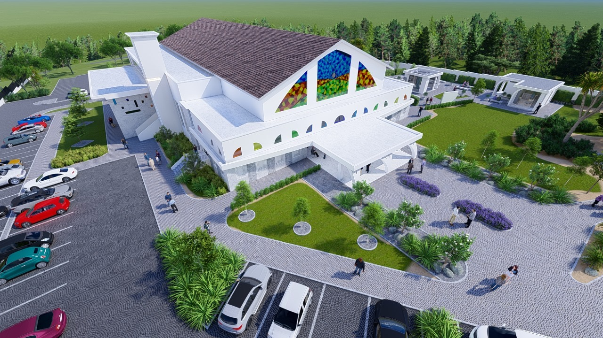
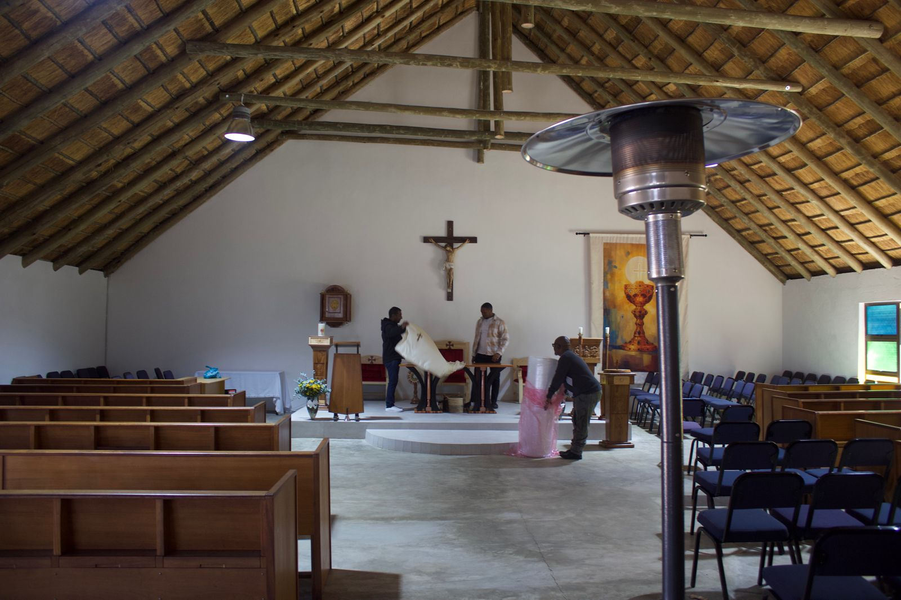

Together we build the House of God
Your support is vital to bringing our new parish home to life. Every contribution builds a lasting legacy for generations to come.
Account Name:St John Baptist Scalabrini
Bank: Standard Bank
Account Number: 271-816-430
Branch Code: 051001
You may also place contributions in the parish office or directly in the marked “Building Fund” box at the church entrance.
Soon you will be able to give securely online through our website.
© 2025 St. Scalabrini Parish. All rights reserved.
Telephone: (068) 355 8465
Email: parishoffice@stscalabrinicatholicchurch.co.za
155 Walton ave,Carlsward,Midrand,1684
WHATSAPP GROUP
FOR ANNOUNCEMENTS